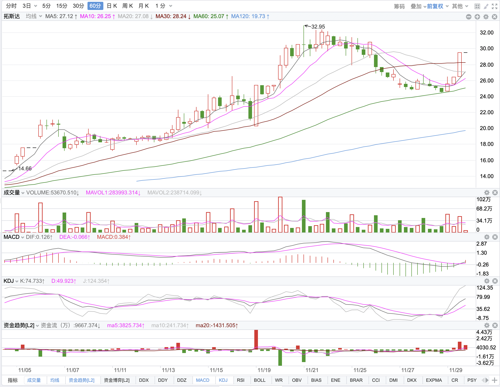
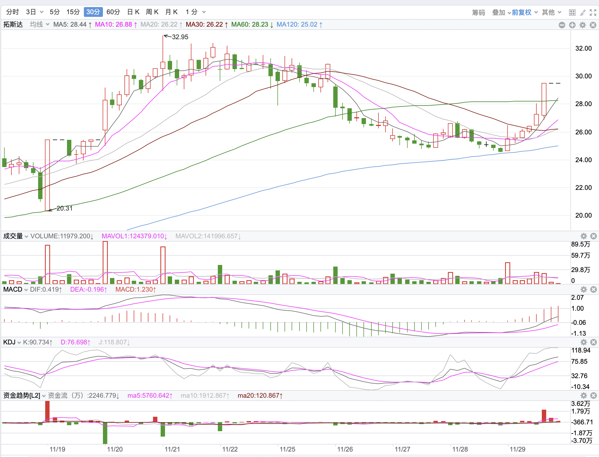
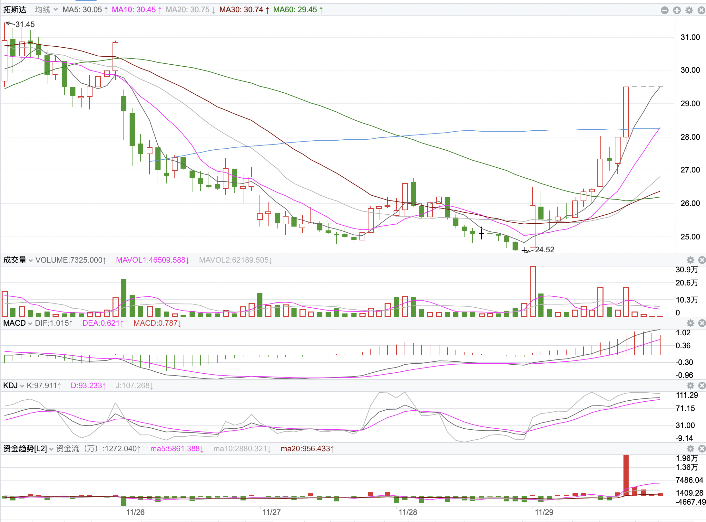

11月28日有感
日线的上涨，必然是60分钟级别的助力，60分的上涨，由30分钟助力……
日线级别的金叉一定在60分钟内发生过一次，依次类推，往前溯源，我们不是关注涨上去的票，而是关注要涨的票。目前板块轮动太快，很难在资金获利的票上，撕咬一口。
查询命令：日线kdj金叉，MACD即将金叉，非新股与次新股，非st股
买点，KDJ：60分钟金叉，30分钟金叉，15分金叉金叉和5分金叉
买点，MACD：60分钟MACD背离
买点一定要落在分时MACD绿柱。
指标倚重顺序，MACD>KDJ。KDJ指标具有指导性和提前性，作为预警指标。
拓斯达，日线回调，60分钟形成金叉，像这样前期涨停的票，振幅合适，买点也很清晰，怎么能挑出来呢，很是疑惑——指标上看，
1. 60分钟kdj金叉，30分钟macd金叉（60分钟绿柱缩短）

2. 30分钟kdj金叉，15分钟macd金叉


两条语句都能调出来，回调振幅在5-13不等。先确定大方向的KDJ金叉形成，在跟踪次级别的MACD的金叉形成。同时，考量级别中的振幅与波段长短。
大的行情，前面一定有资金入驻
监控不易，即使备份。